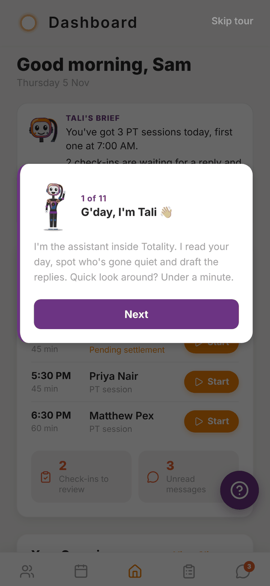
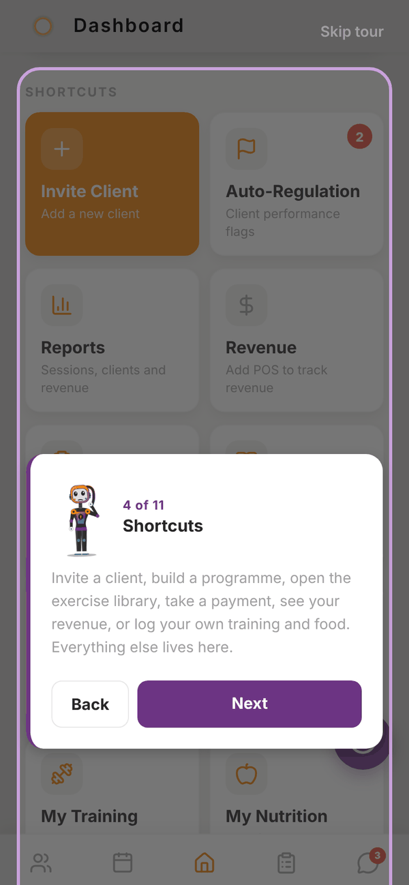
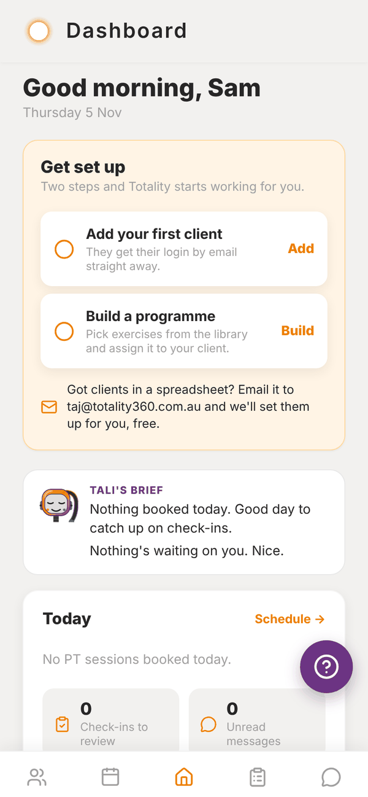
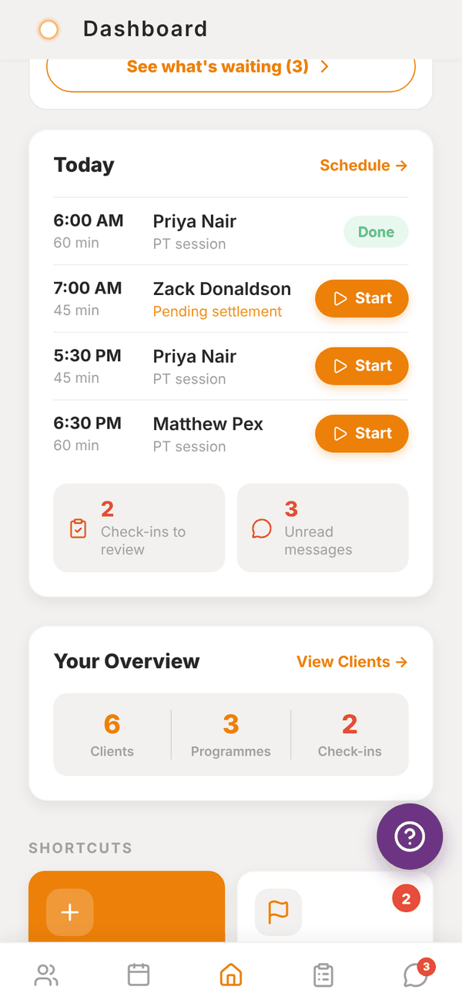
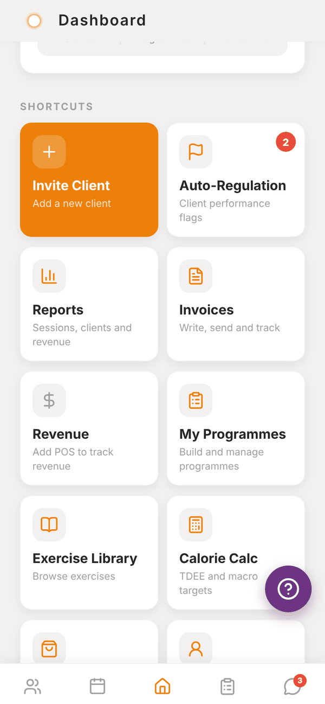
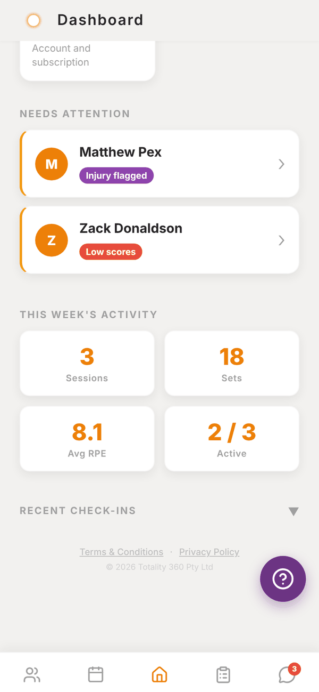

Totality for trainers
The tour and your Home screen
What the first-time tour shows, and every card on Home from Tali's brief to This Week's Activity.
Home is the middle tab. It tells you what's on today, what's waiting for you, and gives you a shortcut to every tool. Pull down on Home to refresh everything.
The tour#
The first time you reach Home, Tali walks you through it in 11 short steps: her brief, Today, Shortcuts, This week, then each tab (Clients, Schedule, Check-ins, Messages), what your 7 days include, and a suggested first step.
- Tap Next to move on, Back to go back, or Skip tour at the top to close it.
- The tour only runs once. Everything it points at is explained on this page.


Get set up#
Until you have a client and a programme, a Get set up card sits at the top of Home with two steps:
- Add your first client: tap Add to open Invite Client.
- Build a programme: tap Build to open your programmes.
Each step ticks off once it's done. Under them: "Got clients in a spreadsheet? Email it to admintotality@gmail.com and we'll set them up for you, free." Tap that line to start the email.

Tali's brief#
Trial Paid Tali's brief sums up your day in a couple of lines: sessions and classes booked, check-ins waiting, and anyone who's gone quiet. Once she has drafted things for you during the week, a recap line shows what she did. Tap See what's waiting to open the Waiting on you list. Writing the brief uses no credits.
On the Free plan the brief is replaced by Tali, on the Solo plans, with a See plans button.
Today#
Today lists your PT sessions for today in time order.
- Tap a client's name to open their profile.
- Start opens a live session for the programme session that client is due today. See Running a session.
- Done shows once a session has been completed.
- Pending settlement means the session was booked without a credit. See Credits and settling sessions.
- Gym trainers also see Classes you're teaching today, with how many spots are booked.
- At the bottom, Check-ins to review and Unread messages show counts. Tap either to jump there.
- Schedule → opens the Schedule tab.

Your Overview#
Three numbers: Clients, Programmes and Check-ins waiting. View Clients → opens your client list. The check-ins number turns red when any are waiting.
Shortcuts#
A grid of tiles to every tool:
| Tile | Opens | Who sees it |
|---|---|---|
| Invite Client | Adding clients | Everyone |
| Auto-Regulation | Auto-regulation, with a badge for pending flags | Everyone |
| Gym Members | Gym members | Gym trainers |
| Classes | Classes | Gym trainers |
| Reports | Reports | Everyone |
| POS | Payment links | Independent trainers with POS, and gym trainers when the gym has POS |
| Invoices | Services, notes and invoices | Independent trainers |
| Revenue | Marketplace and revenue | Independent trainers with POS. Without POS it reads "Add POS to track revenue" |
| My Programmes | Programmes | Everyone |
| Exercise Library | Exercise library | Everyone |
| Calorie Calc | The calorie and macro calculator. See Client nutrition | Everyone |
| Shop | Marketplace | Everyone |
| Me | Your own training, food, progress and sleep. See Me | Everyone |
| Settings | Settings | Everyone |

Needs Attention#
Under the shortcuts, Needs Attention lists clients who might be slipping, with a reason pill on each:
- Inactive 7d+: nothing logged in the app for 7 days or more.
- Low scores: their latest check-in had energy or sleep at 2 out of 5 or lower, or training adherence at 25% or lower.
- Injury flagged: their latest check-in mentioned an injury or concern.
Tap a client to open their profile.
This Week's Activity#
Four numbers for Monday to today across your clients: Sessions logged, Sets logged, Avg RPE, and Active (how many clients logged something, out of your total).
Recent Check-Ins#
A collapsed list of the latest check-ins. Tap the heading to open it. Each row shows dots for Sleep, Energy and Adh (adherence): green is good, amber is middling, red is low. Tap a row to open Check-ins.

Banners at the top#
- Trial countdown: shows when your trial has 2 days or fewer left. Tap for plans.
- Gym invite: shows when a gym has invited you. See Joining a gym.
Questions#
Can I see the tour again?
Not at the moment. It runs once on a new account. This page covers everything it shows.
Why does a client show "Inactive 7d+" when they trained with me?
Activity counts what's logged in the app: training sessions, food and check-ins. If you ran the session without logging it, Totality can't see it. Log sessions through Start or Run Session so they count.
Why is Start missing next to a booking?
Start shows for booked sessions that aren't done yet. Completed sessions show Done instead.
What does "No session to start" mean when I tap Start?
The client has no programme session scheduled for today (no programme, or today is a rest day). Open their profile and pick any session from their programme with Run Session →.